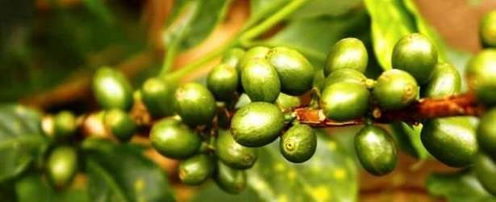
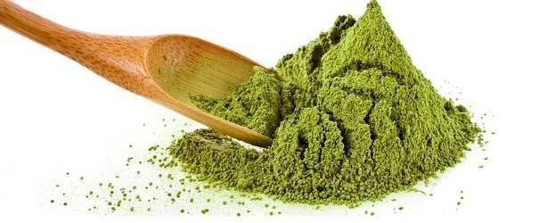

Green Coffee Beans
- High Level of Antioxidans
- Metabolism Boosters
- Powerful Appetite Suppressant
- Enhanced Energy Levels
- Lowers Blood Sugar
- Lower Cholesterol

Pure Green Coffee Bean Extract
Read About
